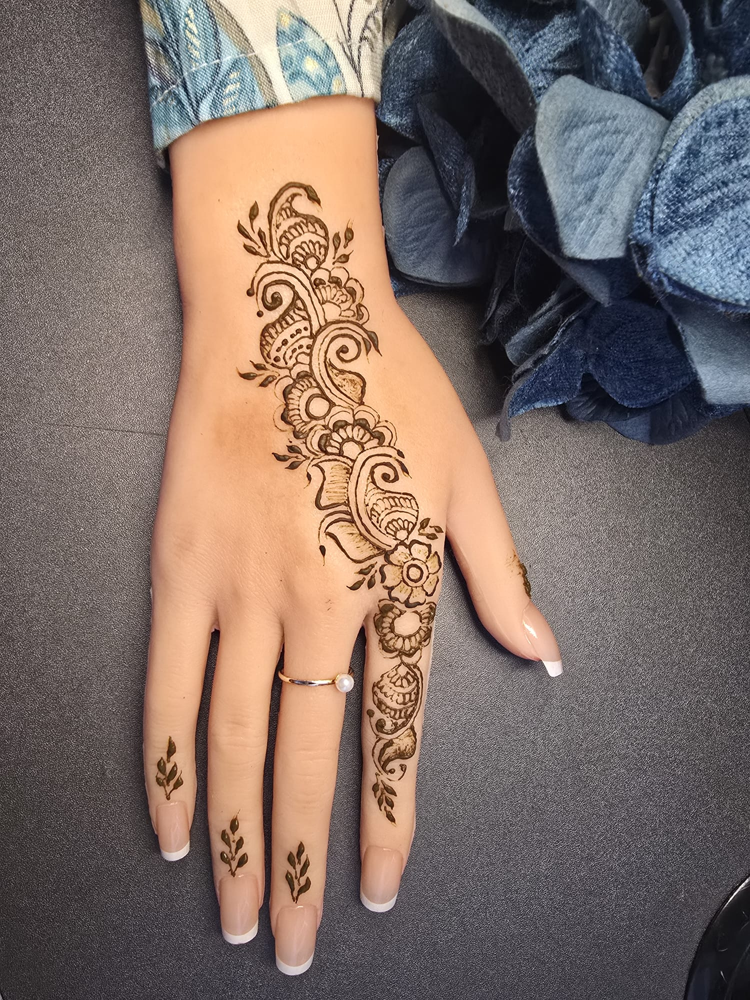
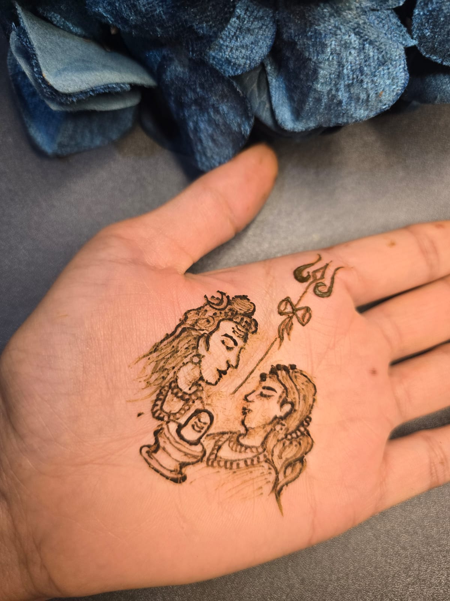
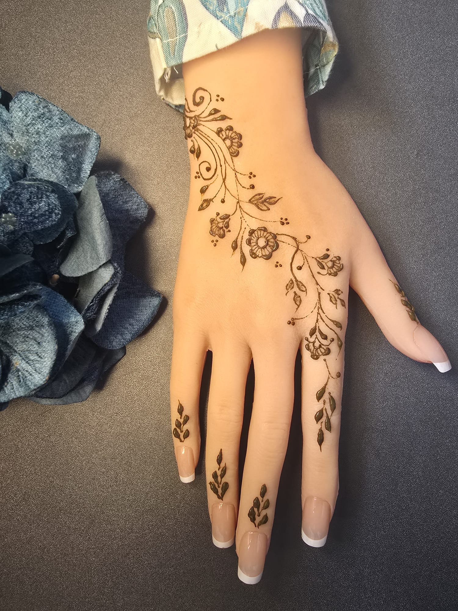
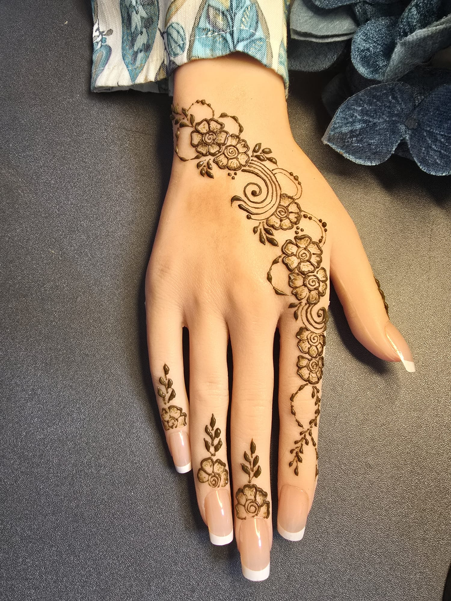
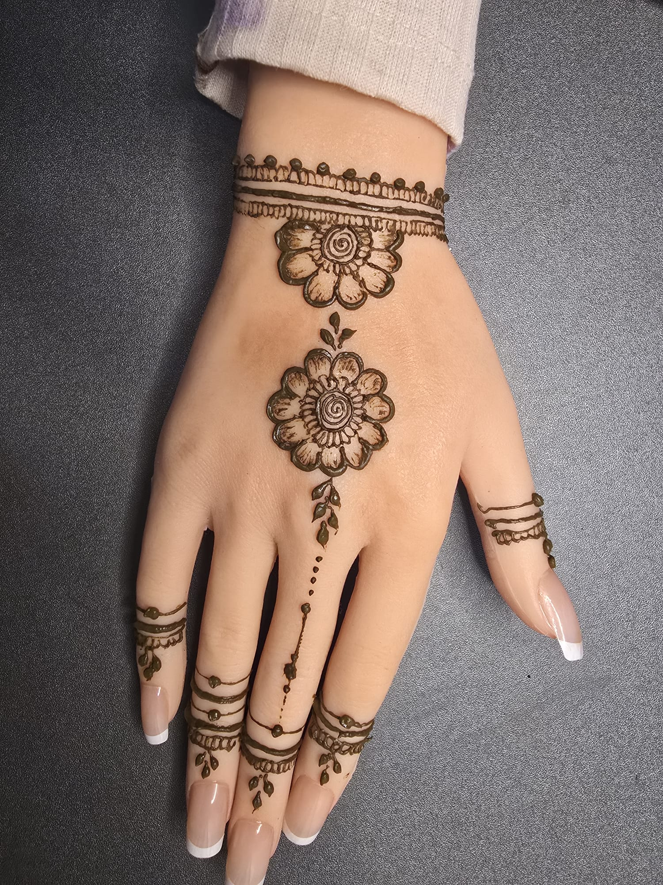
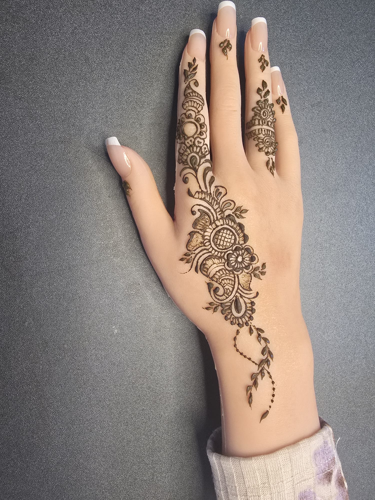
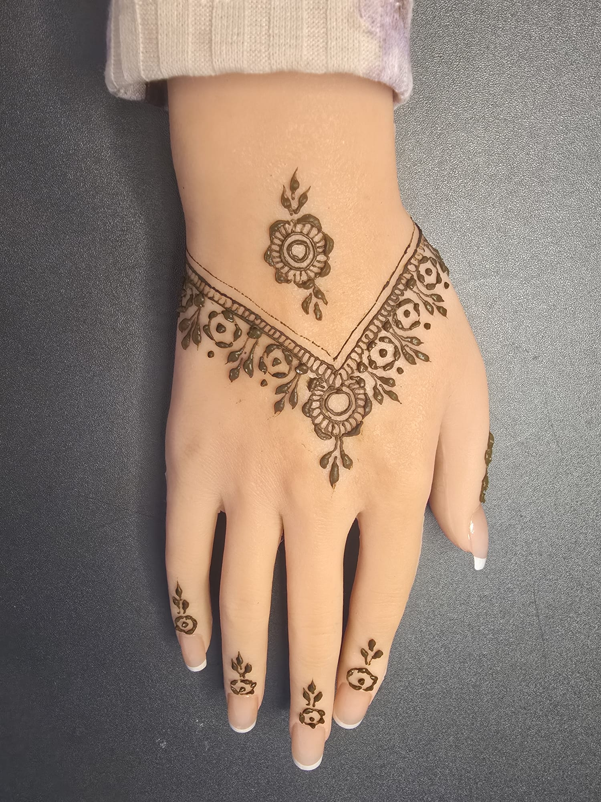
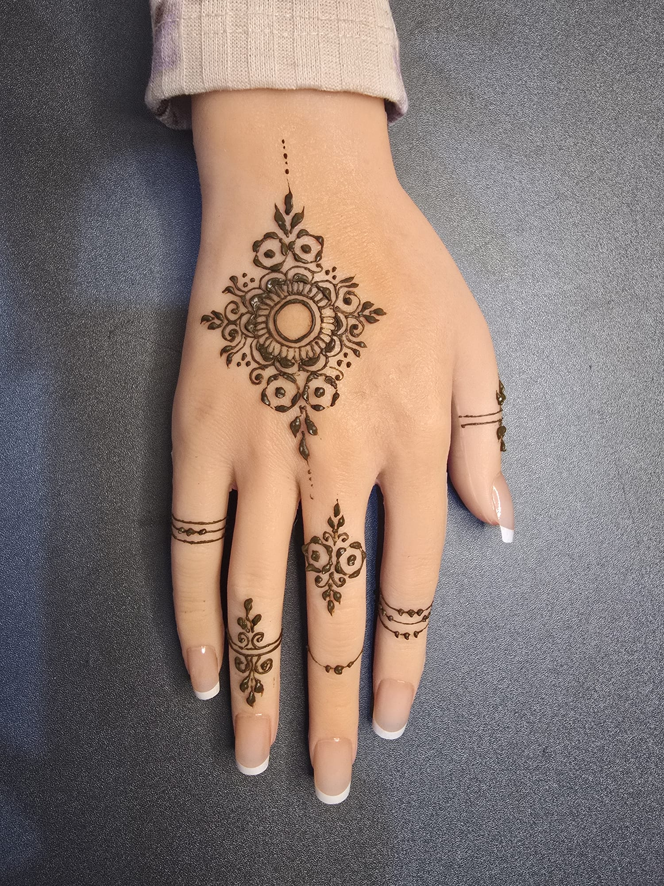
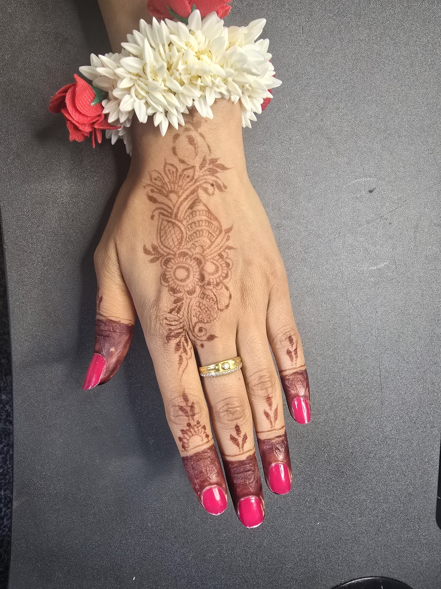

Leafy Arabic trail
A graceful side trail with leaves and paisley-style movement, lovely for a soft Shravan look.
Shravan, also called Sawan, is a sacred monsoon month in the Hindu calendar. It is closely associated with devotion to Lord Shiva, Monday prayers, fasting, temple visits and a quieter kind of beauty: rain, green leaves, fresh beginnings and simple rituals at home.
This draft brings together the story behind Shravan and soft Mehndi Aura design ideas you can try for Somwar vrat, puja days, family gatherings or a gentle festive look.

In many Hindu traditions, Shravan is devoted to Lord Shiva. One beloved story connects the month to the Samudra Manthan, the churning of the ocean, when a powerful poison appeared and Shiva held it in his throat to protect creation. Devotees remember this compassion through prayers, water offerings, bilva leaves and acts of self-discipline.
Shravan also arrives with the monsoon season, so the mood of the month is naturally green, fresh and reflective. That makes it a lovely moment for mehndi designs inspired by leaves, vines, water drops, mandalas and peaceful floral details.
For Shravan, I would keep the designs graceful rather than too heavy: leafy trails, florals, mandala centres, bracelet details, soft Arabic flow and tiny devotional symbols if you want them. Not every Shravan design needs a religious symbol; sometimes a clean green-season floral hand says enough.

A graceful side trail with leaves and paisley-style movement, lovely for a soft Shravan look.

Fine vines, small florals and leafy fingers give a light monsoon-inspired hand.

A fuller floral trail for puja days, family visits or when you want more detail in photos.

A bracelet-style wrist with floral centre detail, pretty with bangles and simple outfits.

A more dressed-up hand with leafy drops and floral detail for a festive Shravan gathering.

A neat V-shape frame with floral accents, ideal if you like clean symmetry.

A centred mandala with delicate finger lines for a simple, devotional hand.

A gentle, already-stained look paired with flowers, useful for showing how the colour settles.
The prettiest Shravan mehndi does not have to be the heaviest design. A small detail can feel meaningful when it matches the mood of the month: devotion, rain, greenery, flowers and calm family rituals.
Keep Monday mehndi devotional but wearable. A Shiv-Parvati palm design, a soft mandala, leafy fingers or a clean floral trail can feel special for vrat, temple visits and quiet family prayers without making the hand look too crowded.
If you are wearing green bangles, a saree, suit or simple kurti, choose designs with vines, bracelet lines and tiny leaves. They echo the monsoon mood and make the whole look feel fresh, festive and thoughtfully put together.
A Shravan design can carry meaning without being heavy. Think bilva-inspired leaves, water-drop dots, mandala centres, Shiv-Parvati artwork or trishul-inspired lines woven gently into florals so the design still feels elegant.
Let your Shravan mehndi develop slowly. Keep the paste on as long as comfortable, scrape it off gently, avoid water straight away and keep your hands warm. The stain usually deepens beautifully over the next day.
Shravan mehndi designs can include Shiv Parvati artwork, leafy trails, floral hands, mandalas, bilva-inspired leaves and simple puja-ready details.
Yes. Send your date, area, outfit colour and saved design ideas so Tanya can suggest a Shravan-ready mehndi look.
Send your date, area, outfit colour and a few saved designs. I can suggest a soft floral, leafy, Arabic or minimal design that feels right for Shravan without overcomplicating the look.